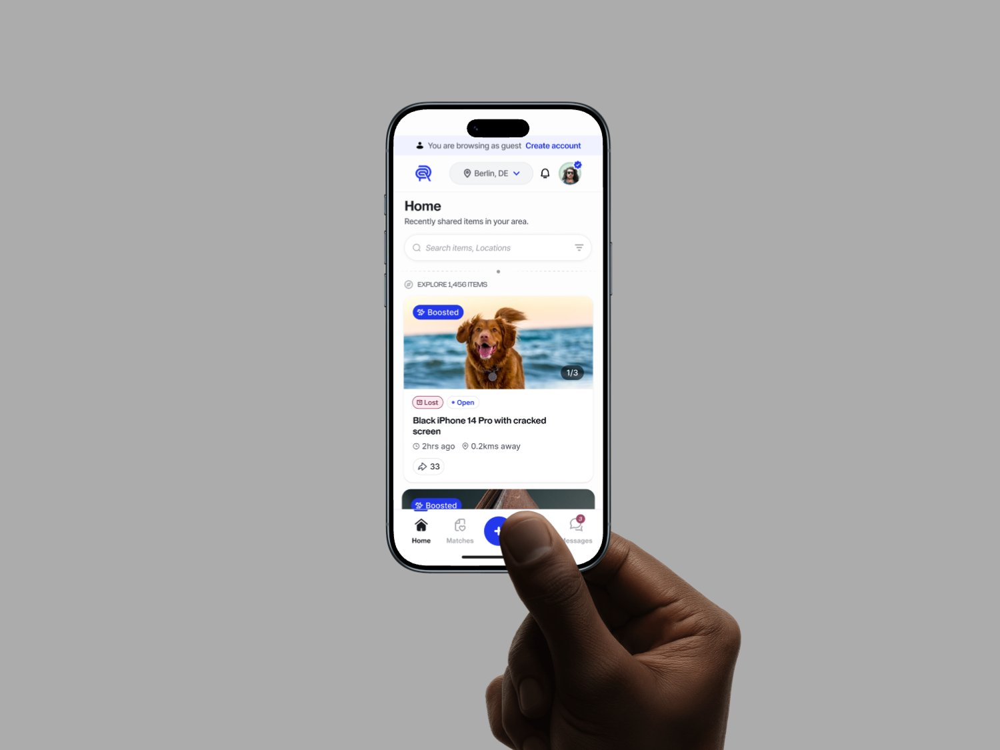
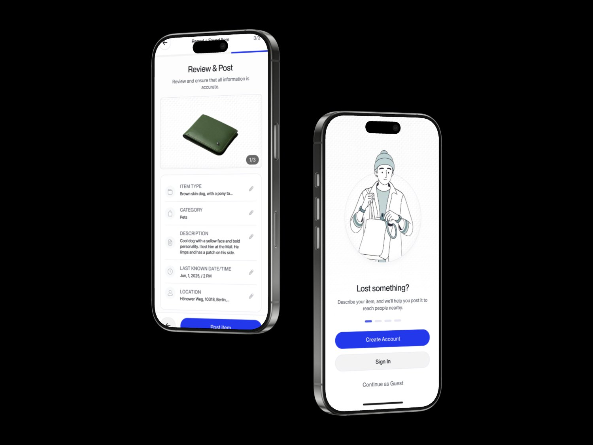
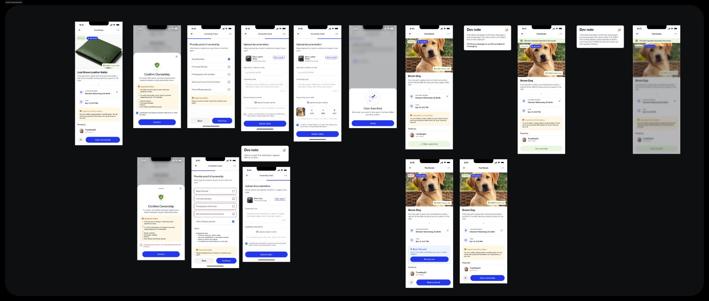
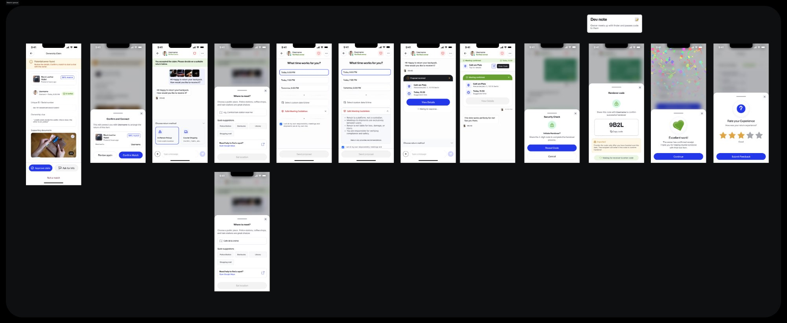
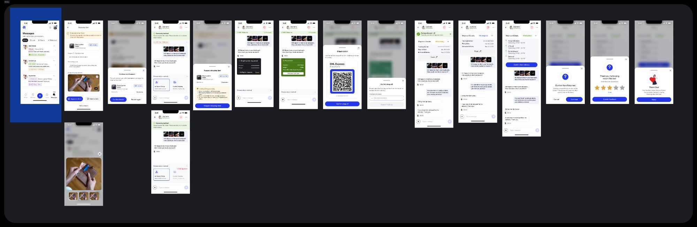
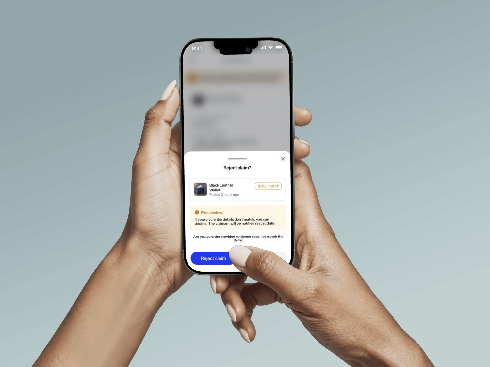

Renuir: reuniting people with their lost belongings
I led product design for Renuir, a complete mobile platform for Europe's lost-and-found ecosystem: onboarding, item reporting, AI-powered matching, ownership verification, secure delivery coordination, and trust-building features. 47 screens, end to end, across B2C and B2B. It is in TestFlight with pilot users.

Most lost items are never returned
People who lose personal belongings in public spaces, transit, and events, plus finders who want to return items without hassle
A mobile platform that connects lost items with their owners through AI matching, ownership verification, and coordinated return
Immediately after losing or finding an item, when urgency is highest and existing systems fail to provide any clear next step
Public transit, airports, events, cafes, and shared spaces across European cities
Most lost items are never returned. Lost-and-found offices operate in silos, finders have no clear way to return items, and no cross-organization protocol exists
Camera-first item reporting, AI photo matching, multi-step ownership verification, safe meetup coordination, and shipping integration
Items never returned
From our interviews and operator conversations: most lost items in European transit systems are never reunited with their owners, because the process is fragmented.
When people give up
Interviewees described stopping the active search within the first day, worn down by friction in reporting and searching.
Unified platforms
Our competitive scan found no protocol-layer solution that standardizes lost-and-found across organizations and countries.
Critical handoff points
Our service blueprint surfaced the moments where items get permanently lost in the current system.
6 weeks of deep research
I spent 6 weeks in discovery before designing a single screen. I interviewed people who lost items, people who found items, and lost-and-found office operators. I mapped the EU regulatory landscape to understand legal requirements around found property.
User interviews (n=16)
Spoke with 8 "losers" (people who lost items), 4 "finders," and 4 lost-and-found operators across three European cities. Key finding: the emotional distress of losing items is severely underestimated. It is not just about the object's monetary value.
Competitive analysis
Analyzed 8 solutions (iLost, Tile, Foundit, and a major transit operator lost-property service). Most were device-only (Tile) or single-organization (iLost). None offered a true cross-organization protocol. This validated our infrastructure-first approach.
Regulatory mapping
National found-property law (BGB sections 965-984) defines legal obligations for finders. EU GDPR adds complexity around sharing personal data between parties. These constraints directly shaped the ownership verification and data-handling flows.
Service blueprint
Created an end-to-end blueprint mapping frontstage interactions, backstage processes, and support systems. This revealed the 7 critical handoff points where items typically get lost in the current system.
Three user types, fundamentally different trust needs
Sara, 28
Realises the loss hours later, with no idea where to start looking.
- Goals
- Report lost items quickly, get notified if found, verify and recover securely
- Frustrations
- No centralized search, emotional stress, privacy concerns about sharing personal info with strangers
- Trust need
- High. Needs to know the platform and the finder are both legitimate
Marcus, 35
Wants to return a bag found in a cafe without the handover being awkward or risky.
- Goals
- Return items without hassle or obligation, no need to meet strangers, feel good about helping
- Frustrations
- Social awkwardness, liability concerns, time commitment uncertainty
- Trust need
- Medium. Wants assurance they will not be blamed for theft or damage
Katja, 42
Runs a lost-and-found office full of unclaimed items and needs something that fits existing processes.
- Goals
- Reduce unclaimed items, automate matching, integrate with existing tools
- Frustrations
- Manual processes, storage costs, regulatory compliance burden
- Trust need
- Institutional. Needs data security proof and GDPR compliance
The return loop: balancing speed with security
The critical design challenge was creating a flow that is fast (users want immediate resolution) while remaining secure (ownership must be verified to prevent fraud). Every step had to build trust incrementally.
Walking the return loop
The product is one loop with six moments, and each one either builds trust or spends it. What follows is that loop in order, from the minute someone realises an item is gone to the moment it is back, including the path where the claim is refused.
Reporting a loss, camera first
Onboarding communicates three value props through illustrated screens: report, match, return. Sign-up is email plus OTP for simplicity, with Google SSO as the alternative. Reporting is camera-first: photograph the item, add details, pin the location, post. The person doing this has just lost something, so the flow asks for the least it can get away with.

Onboarding, then a camera-first flow to report an item.
The match, and a private channel
When the AI finds a candidate, both sides see a match confidence score rather than a bare yes. In-app messaging then coordinates the return without either party handing over a phone number or an address, which is the single biggest objection finders raised in research.

Match confidence, then a private chat that never exposes contact details.
Proving the item is yours
Ownership is established with serial numbers, receipts, photos, or warranty documents, and the finder reviews the proof before approving. This is the step that carries the most fraud risk and, as testing later showed, the most friction.

The full verification flow: claim, evidence, review, decision.
Handing it over in person
For an in-person return, the app suggests a safe public place and confirms the handover with a four-digit code, so neither person has to judge whether a stranger is trustworthy on the spot. The code is the proof that the item actually changed hands.

A suggested public location, then a four-digit code to confirm the handover.
Or shipping it, tracked
Not everyone wants to meet. The second path ships through an integrated delivery partner with live tracking, so a finder can return an item without ever meeting the owner. Offering both is what makes the loop work for people with opposite comfort levels.

The shipping path, for finders who would rather not meet anyone.
When the evidence does not add up
A claim can be wrong, or dishonest. The finder can decline, and the claimant is told respectfully rather than left guessing. Designing the refusal properly matters more than it sounds: it is the moment the platform either protects both sides or makes an enemy of one.

The decline path, written to protect the finder without accusing the claimant.
Two rounds: moderated (n=6) and unmoderated (n=18)
Tested with people who had recently lost items, frequent public transit users, and hostel travelers. Used both moderated sessions for qualitative depth and Maze for quantitative validation.
Task completion
Key metrics
Ownership verification too complex on mobile
21% struggled with document upload. The multi-select interface confused users. Simplified to progressive disclosure: one proof type at a time with clear examples.
Meeting location suggestions needed context
Users loved safe meeting spots but wanted to know why they were "safe." Added rationale labels: "Police station: public, CCTV, staff present."
Match confidence score built immediate trust
5 of the 6 moderated testers said the "98% match" indicator gave them confidence the system was working. Without it, users questioned whether the match was real.
Handover code needed better error recovery
Wrong code error was unclear. Added: "Code does not match. Ask the other person to show their code screen" with retry.
Designing for trust is the hardest problem
In a platform where strangers exchange personal belongings, every interaction must build trust. Trust is not a feature. It emerges from dozens of small decisions: clear language, verification steps, safety features, and transparent processes.
0 to 1 requires ruthless prioritization
With limited resources, I developed the framework "What is the minimum viable trust?" The smallest set of features that makes someone comfortable handing belongings to a stranger through the platform.
The design system scales the product
The component library I built supports the mobile app, a B2B admin dashboard, and API documentation from the same token set. New flows can be assembled in hours, not weeks.
Regulatory constraints improve design
Found-property law and GDPR initially felt like obstacles. They turned out to be forcing functions that made the verification flow more trustworthy. Legal requirements and good UX aligned perfectly.